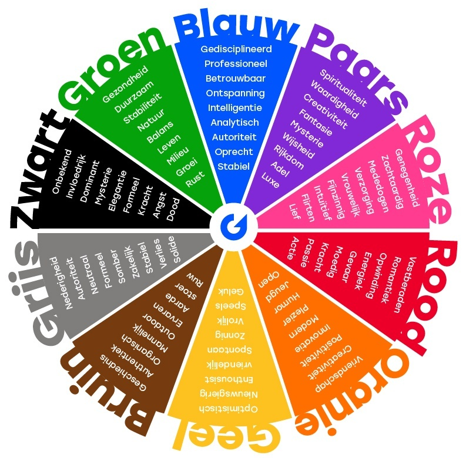

op deze site krijgt u uitleg over kleurmodellen
Een bit heeft de waarde 0 of 1. Zo kunnen per kleur 2 ^ 8 = 256 gradaties van die kleur gemaakt worden.
Omdat de kleur van een pixel is opgebouwd uit rood, groen en blauw wordt
het totaal aantal mogelijke kleuren per pixel 256 x 256 x 256 = 16,7 miljoen kleuren.
